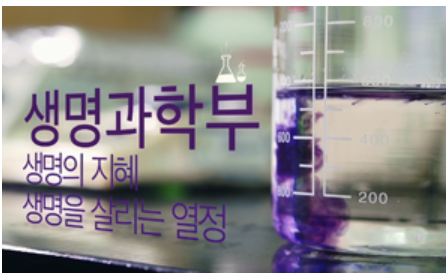

생명공학부
생명공학부 커리큘럼
| 학년 | 학기 | 과목 |
|---|---|---|
| 1학년 | 1학기 | 일반생물학 |
| 2학기 | 일반화학, 질병과 건강 | |
| 2학년 | 1학기 | 일반미생물, 유기화학 |
| 2학기 | 생화학, 세미나1, 분자생물학1 및 실습, 생명과학 진로개발 세미나, 일반미생물학실습 | |
| 3학년 | 1학기 | 생리학, 생화학2, 세미나2, 단백질 분리 및 정제, 생명과학 미래기술 세미나, 항생물질학 |
| 2학기 | 발생학, 세미나3, 세포생물학 및 실습, 생물화학공학, 생명과학 캡스톤 설계1, 신약연구개발, 암생물학 | |
| 4학년 | 1학기 | 면역학 및 실습, 세미나4, 유전학, 세포생물학2, 생명과학 캡스톤 설계2 |
| 2학기 | 신경생물학, 졸업과제2, ESRR(English Scientific Research Report) |
- 생명 현상의 심층적 이해를 통한 생명공학 기초 및 응용 역량 강화
- 분자생물학, 유전학 등 핵심 생명과학 분야의 이론 및 실습 교육
- 바이오 산업 발전에 필요한 최신 기술 및 트렌드 학습
- 실험 및 연구 중심 교육을 통한 문제 해결 및 실무 능력 배양
- 졸업 후 다양한 생명공학 관련 분야로의 진출 기회 제공
생명공학부 추천 교양 및 활동
추천 교양
- 일반생물학
- 일반화학
- 유기화학
- 질병과 건강
- 일반미생물
- 일반미생물학실습
- 생화학1·2
- 세미나1~4
- 분자생물학1 및 실습
- 생리학
- 단백질 분리 및 정제
- 발생학
- 세포생물학 및 실습
- 유전학
- 면역학 및 실습
- 신경생물학
- 내분비 및 생식
- 생물화학공학
- 생명과학 진로개발 세미나
- 스마트 바이오기술 세미나
- 생명과학 미래기술 세미나
- 생명과학 캡스톤 설계1·2
- 졸업과제2
- ESRR
- 시스템생물학
- 바이오데이터 분석
- 응용유전체학
- 생물정보학
- 경영학입문
- 통계학
추천 교내활동
- 로직학회 활동
- 교내 연구실 인턴 활동
- 학과 연구실 RA 활동
- 교수님 랩실 참여
- 교내 진로 세미나 참여
추천 교외활동
- 외부 대학 연구실 인턴 활동
- 국내외 학술 세미나 참가
- 전국 대학생 생물학 심포지엄 참가
- 학술 모임과 학술 토론회 발표
추천 자격증/시험
- 생명공학 분야는 별도의 특정 자격증보다는 대학원 진학과 연구실 경험, 논문 작성 경험이 더 중요하게 평가됩니다.
- 생물공학기사 (관련 분야 관심 시)
- 실험실 안전 관련 교육 이수증